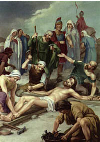

XI. állomás: Jézust a keresztre szegezik

"Átlyuggatták kezemet és lábamat, megszámlálhatom minden csontomat" (Zsolt 21,17-18). Beteljesülnek a prófétai szavak. Megkezdődik a kivégzés. A pribékek ütései összeroncsolják a keresztfát és az elítélt kezét meg lábát. A kéz csuklóin erőszakkal hatolnak át a szögek, ezek tartják az elítéltet agóniája kimondhatatlan kínjai közepette. Testében és lelkében, amely a legérzékenyebb, Krisztus kimondhatatlanul szenved. Vele együtt két gonosztevőt is megfeszítenek, egyiket jobbról, a másikat pedig balról. Így teljesedik be a prófécia: "A gonoszok közé sorolták" (Iz 53,12). Amikor a hóhérok fölemelik a keresztet, megkezdődik a három órán át tartó haldoklás. Be kell teljesednie ezeknek a szavaknak is: "Amikor felemeltetem a földről, mindeneket magamhoz vonzok" (Jn 12,32). Mi az, ami ebben az elítéltben, a kereszt agóniájában "vonzó"? Egy ilyen intenzív szenvedés látványa bizonyára együttérzésre indít. De az együttérzés túl kevés ahhoz, hogy a saját életünket fűzzük ahhoz, aki a fán függ. Hogyan magyarázhatnánk, hogy nemzedékek egymásutánjában ez a borzasztó látvány számtalan sok ember seregét vonzotta, hogy hitük megkülönböztető jelévé váljék a kereszt? Férfiaké és nőké, akik századokon át éltek és e jelre nézve adták az életüket? Krisztus a szeretet erejével vonz a kereszthez, isteni szeretetével, amelyet nem lehet elsikkasztani a teljes önátadással; végtelen szeretetével, amely fölemeltetett a földről a kereszt fájára, Krisztus testének súlyával, hogy kiegyensúlyozza a régi bűnök terhével; határtalan szeretetével, amely enyhít minden szeretet-hiányt és megengedi az embernek, hogy újra oltalmat találjon az irgalmas Atya kezei között. Kereszten fölmagasztalt Krisztus, vonzz minket is, az új évezred férfiait és asszonyait! A kereszt árnyékában "járjunk a szeretetben, mivel Krisztus is szeretett minket és önmagát adta nekünk, föláldozva az Istennek jó illatú áldozatul" (vö. Ef 5,2)!
Fölmagasztalt Krisztusunk, keresztre feszített szeretet, töltsd el szívünket szereteteddel, hogy keresztedben a mi megváltásunk jelére ismerjünk, és sebeidtől átjárva éljünk és haljunk veled, aki élsz és uralkodol az Atyával és a Szentlélekkel, most és mindörökkön örökké. Amen.